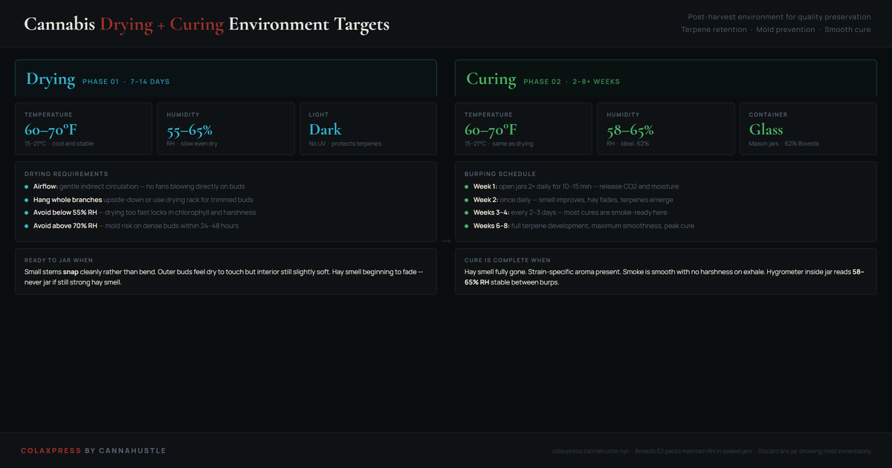

Cannabis drying and curing: environment targets for both phases.
The grow ends at harvest. The quality doesn't. What happens in the 3–8 weeks after cutting determines whether the terpenes built during flower are preserved or lost to a harsh, fast dry. Drying and curing are two distinct phases with different goals and different environmental requirements. Treating them as one continuous process — or rushing either — is the most common post-harvest mistake craft growers make.
A properly cured cannabis flower should smell and smoke noticeably different at week 2 versus week 6 of cure. If yours doesn't change, the environment was off and the enzymatic process that develops flavor either didn't happen or was cut short.

Why the environment numbers matter
The drying phase goal is to reduce water content slowly and evenly. Cannabis flower is roughly 75–80% water at harvest. Getting that to 10–12% for jarring takes about 7–14 days in the right environment. Too fast (low RH, high temps, fans blowing directly) and you lock in chlorophyll — the flower will taste like hay no matter how long you cure afterward. Too slow (high RH) and the exterior of the bud dries while the interior stays wet, creating an ideal environment for botrytis inside dense buds.
The curing phase is an enzymatic process. Microorganisms (primarily bacteria) in the plant material continue to break down chlorophyll, starches, and simple sugars that contribute to harshness. This requires moisture — hence the higher target RH in sealed jars — and time. Burping releases CO2 and excess moisture, preventing anaerobic conditions that would spoil the flower instead of improving it.
| Condition | Result |
|---|---|
| RH below 50% | Dries too fast — harsh, hay taste permanent |
| RH above 70% | Mold risk — botrytis in dense buds within 48h |
| Temp above 75°F | Terpene evaporation — flat aroma, less flavor |
| Jars without burping | CO2 buildup, anaerobic spoilage, ammonia smell |
| Jarring too soon | Interior moisture sweats out — wet hay, mold |
| 62% RH, 65°F, dark | Ideal cure — terpenes preserved, smooth smoke |
What you actually need
A thermometer-hygrometer inside the drying space. A small fan for airflow pointed away from the buds. Darkness — hang a blackout curtain if needed. For curing: mason jars (quart size for medium harvests), Boveda 62% humidity packs (maintain jar RH automatically after week 2), and a second hygrometer placed inside the jar lid area to verify.
When to jar
Take a small stem from inside the bud. Bend it. If it bends and springs back, moisture content is still too high — leave it hanging. If it snaps with a clean break, the exterior has dried enough to jar. The interior will still be slightly moist, which is correct — the cure will equalize it. If the whole flower feels crunchy and crumbles, you went past the window and over-dried; this is recoverable with a Boveda pack but you lost some terpenes.
Reading your cure
When you open a jar to burp it, smell it immediately. Week 1: some hay is normal. Week 2: hay should be fading, strain-specific aroma starting to appear. Week 3+: the smell should be recognizably the strain, not hay. If you get ammonia at any point, CO2 was not vented properly and anaerobic bacteria are active — open the jar fully, let it air for 30 minutes, and burp twice daily going forward. Mild ammonia early usually resolves; strong persistent ammonia means the batch is compromised.
Drying and curing questions
What humidity should you dry cannabis at?
Dry cannabis at 55–65% relative humidity at 60–70°F. Below 50% RH the flower dries too quickly, locking in chlorophyll and creating a hay-like taste that curing cannot fix regardless of how long you wait. Above 70% RH the exterior dries while the interior stays wet, creating conditions for botrytis — particularly in dense bud structure — within 48 hours. The 60–65% RH target produces a slow, even dry that preserves terpenes and allows chlorophyll to break down naturally over 7–14 days.
How do you know when cannabis is ready to jar?
Use the stem snap test: take a small stem from inside a bud and bend it. If it bends and springs back, moisture content is still too high — leave it hanging. If it snaps cleanly with some resistance, the exterior has dried enough to jar. The interior will still carry some moisture, which is correct — the cure equalizes it. If the whole flower crumbles and the stem snaps with no resistance, you have over-dried. This is partially recoverable with a 62% Boveda pack, but some terpenes were already lost to the evaporation that caused over-drying.
How long does cannabis need to cure?
Two weeks is the minimum for smokeable quality. Four to six weeks is where flavor and smoothness develop meaningfully. Eight weeks or longer allows full terpene development in strains with complex aromatic profiles. The enzymatic process that breaks down chlorophyll and simple sugars contributing to harshness cannot be accelerated. A simple test: the flower should smell and smoke noticeably different at week 2 versus week 6. If nothing changes across that window, the environment was off — either too dry, too warm, or not sealed and burped correctly.
What does ammonia smell in the cure jar mean?
Ammonia in a cure jar means anaerobic bacteria are active — CO2 was not properly vented and the jar created spoilage conditions rather than curing conditions. Mild ammonia in weeks 1–2 can often be corrected by fully opening the jar for 30 minutes and switching to twice-daily burping going forward. Persistent ammonia after week 3, or a strong ammonia smell at any point, typically indicates the batch was jarred before reaching the correct moisture content. The interior moisture released after jarring created the anaerobic conditions. The flower is usually still usable but the cure has been compromised.
Related harvest guides
Trichome stages chart
When to harvest based on trichome color — the visual that determines your effect profile.
Harvest ripeness indicators
Pistil color, bract swelling, and all the ripeness signals to read alongside trichomes.
Common drying mistakes
The five drying errors that ruin post-harvest quality — and how to avoid each one.